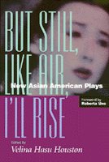

<body bgcolor="#FFFFFF" text="#000000" link="#0000FF" vlink="#CC0000" alink="#CC0000"><center><hr width="350" size="1" align="center" noshade>A rich anthology of American plays by playwrights of diverse Asian ancestry and an equally diverse offering of aesthetic sensibilities<hr width="350" size="1" align="center" noshade><p><a href="https://cdcshoppingcart.uchicago.edu/Cart/ChicagoBook.aspx?ISBN=9781566395373&&PRESS=temple" target="_top">Buy this book!</a> | <a href="https://cdcshoppingcart.uchicago.edu/Cart/Cart.aspx?PRESS=temple" target="_top">View Cart</a> | <a href="https://cdcshoppingcart.uchicago.edu/Cart/Cart.aspx?PRESS=temple" target="_top">Check Out</a></p><p></p></center><!--none//--><h1>But Still, Like Air, I'll Rise</h1>
<H2>New Asian American Plays</H2>
<h3>edited by Velina Hasu Houston, foreword by Roberta Uno</h3>
<P>cloth 1-56639-537-2 $80.50, May 97, <FONT COLOR=#990033>Out of Stock Unavailable</FONT>
<br>paper 1-56639-538-0 $47.95, May 97, <FONT COLOR=#990033>Available</FONT>
<br>Electronic Book 1-43990-612-2 $47.95 <FONT COLOR=#990033>Out of Stock Unavailable</FONT>
<BR> 520 pp
6x9
</P><BLOCKQUOTE><I>"[G]reat eloquence, passion and patience..."</I>
<br>&#151<b><I>The Women's Review of Books</I></b><I></I></BLOCKQUOTE>
<p>In this pathbreaking volume, Velina Hasu Houston gathers together eleven plays that speak in the "hybridized, unique American voices of Asian descent&#151and often dissent." These writers resist the bigotry that attempts to target them solely as people of color as well as the homogenizing tendencies of a multiculturalism that fails to recognize the varied make-up of Asian-America. Anthologized for the first time, these plays testify to the rich complexity of Asian-American experience while they also demonstrate the different styles and thematic concerns of the individual playwrights.
<p>What are Asian-American plays about? Family conflicts, sexuality, social upheaval, betrayal . . . the stuff of all drama. Whether the characters are a middle-aged Taiwanese woman who is married to an Irish American and who dreams of opening a Chinese restaurant, a Chinese-American female bond trader trying to survive a corporate takeover, or an ABC (American Born Chinese) gay man whose lover has AIDS, their Asian-ness is only a part of their story.
<p>As a playwright, Houston is keenly aware of the rigid formulas that often exclude writers of color and women writers from mainstream theater. <i>But Still, Like Air, I'll Rise </i>brings forth vibrant new work that challenges producers and audiences to broaden their expectations, to attend to the unfamiliar voices that express the universal and particular vision of Asian-American playwrights.
<BR>&nbsp;<h2>Excerpt</h2><P>Excerpt available at <a href="http://www.temple.edu/tempress">www.temple.edu/tempress</a></p>
<BR>&nbsp;<h2>Contents</h2><P>
<p>Foreword &#150 Roberta Uno
<br>Acknowledgments
<br>Introduction &#150 Velina Hasu Houston
<br>1. Talk Story &#150 Jeannie Barroga
<br>2. Day Standing on its Head &#150 Philip Kan Gotanda
<br>3. Kokoro (True Heart) &#150 Velina Hasu Houston
<br>4. Dance of the Wandering Souls &#150 Huynh Quang Nhoung
<br>5. Bondage &#150 David Henry Hwang
<br>6. The Conversion of Ka'ahumanu &#150 Victoria Nalani Kneubuhl
<br>7. Cleveland Raining &#150 Sung Rno
<br>8. Breaking Glass &#150 Dmae Roberts
<br>9. Junk Bonds &#150 Lucy Wang
<br>10. Kimchee and Chitlins &#150 Elizabeth Wong
<br>11. A Language of Their Own &#150 Chay Yew
<br>About the Contributors
</P><BR>&nbsp;<H2>About the Author(s)</H2>
<table><tr><td valign="top"><img src="/tempress/authors/1348_au1.gif" height="90" width="75"></td><td width="100%" valign="middle"><p><B>Velina Hasu Houston</B> is Associate Professor and Director of the Playwriting Program in the School of Theatre at the University of Southern California, Los Angeles. She is also an award-winning playwright, screenwriter, essayist, and poet. Her work has been presented internationally at such venues as the Manhattan Theatre Club, Old Globe Theatre, A Contemporary Theatre, Syracuse Stage, Smithsonian Institute, Kennedy Center, and Japan Society. She has written for film and television and her plays and critical essays are published in several anthologies. Her first anthology for Temple was <i><a href="940_reg.html" target="_top">The Politics of Life: Four Plays by Asian-American Women</a>.</i></P></td></tr></table>
<BR><H2>Subject Categories</H2>
<p><A HREF="/tempress/literature.html" TARGET="_top">Literature and Drama</a>
<BR><A HREF="/tempress/asian_amer.html" TARGET="_top">Asian American Studies</a>
</p>
<BR><h2 class="inpageheading">In the series</H2>
<P><I><a href="http://www.temple.edu/tempress/asam_history.html" onMouseOver="window.status='Click for other books in this series!'; return true;" onMouseOut="window.status=''; return true;" target="_top">Asian American History and Culture</a></i>, edited by K. Scott Wong, Linda Trinh V�, and Cathy Schlund-Vials.
</p><p>Founded by Sucheng Chan in 1991, the <I>Asian American History and Culture</I>, series has sponsored innovative scholarship that has redefined, expanded, and advanced the field of Asian American studies while strengthening its links to related areas of scholarly inquiry and engaged critique. Like the field from which it emerged, the series remains rooted in the social sciences and humanities, encompassing multiple regions, formations, communities, and identities. Extending the vision of founding editor Sucheng Chan and emeriti editor Michael Omi and David Palumbo-Liu, series editors K. Scott Wong, Linda Trinh V�, and Cathy Schlund-Vials continue to develop a foundational collection that embodies a range of theoretical and methodological approaches to Asian American studies.</p>
<p align="center"><a href="https://cdcshoppingcart.uchicago.edu/Cart/ChicagoBook.aspx?ISBN=9781566395373&&PRESS=temple" target="_top">Buy this book!</a> | <a href="https://cdcshoppingcart.uchicago.edu/Cart/Cart.aspx?PRESS=temple" target="_top">View Cart</a> | <a href="https://cdcshoppingcart.uchicago.edu/Cart/Cart.aspx?PRESS=temple" target="_top">Check Out</a></p><p><font face="Arial" size="1"><a href="copyright.html" onMouseOver="window.status='Web Copyright Policy';return true;" onMouseOut="window.status=''" title="Web Copyright Policy">&copy;</a> 2015 <a href="http://www.temple.edu" target="new" onMouseOver="window.status='Link to Temple University home page';return true;" onMouseOut="window.status=''" title="Link to Temple University home page">Temple University</a>. All Rights Reserved. http://www.temple.edu/tempress/titles/1348_reg.html</font></p>